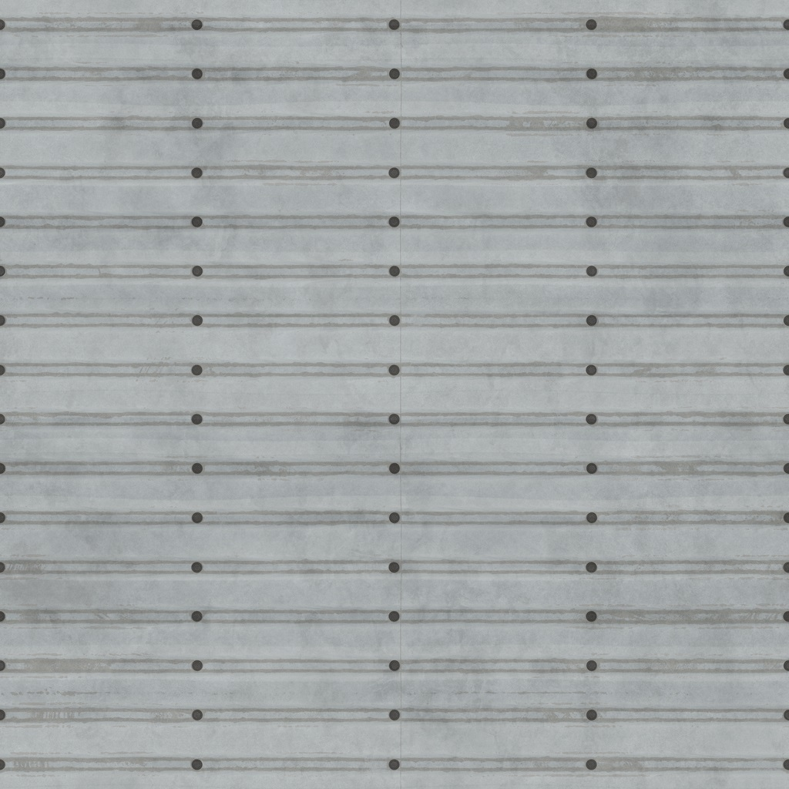

<html>
  <head>
    <script src="https://aframe.io/releases/1.4.0/aframe.min.js"></script>
    <a-assets>
      
      

      

      
    </a-assets>
  </head>
  <body>
    <a-scene>
      <a-box
        color="#ffffff"
        src="#metal"
        position="-2 1.5 -9"
        width="4"
        height="4"
        depth="4"
        repeat="2 1"
        normal-map="#metal-normal"
        normal-texture-repeat="1 1"
        normal-scale="1 -1"
        roughness="0.5"
        scale="1 1 1"
      ></a-box>
      <a-box
        color="#ffffff"
        material="color:#FFFFFF;
        src:#brick-texture;
        repeat: 2 2;
        normal-map: #brick-normal;
        normal-texture-repeat: 2 2;
        normal-scale: 1 -1;
        roughness: 0.3;"
        position="2 1.5 -9"
        width="4"
        height="4"
        depth="4"
        repeat="2 2"
        scale="1 1 1"
      ></a-box>
      <a-sphere
        position="2 1.5 -9"
        color="#FF0000"
        roughness="0.2"
        shader="flat"
        opacity="0.5"
      ></a-sphere>
      <a-sphere
        position="2 1.5 -9"
        material="color:#FF0000;
                  roughness:0.2;
                  shader:flat;
                  opacity:0.5"
        scale="3 3 3"
      ></a-sphere>
      <a-sphere
        position="-2 1.5 -9"
        material="color:#0000aa;
                  roughness:0.2;
                  shader:standard;
                  opacity:0.5"
        scale="3 3 3"
      ></a-sphere>
    </a-scene>
  </body>
</html>
